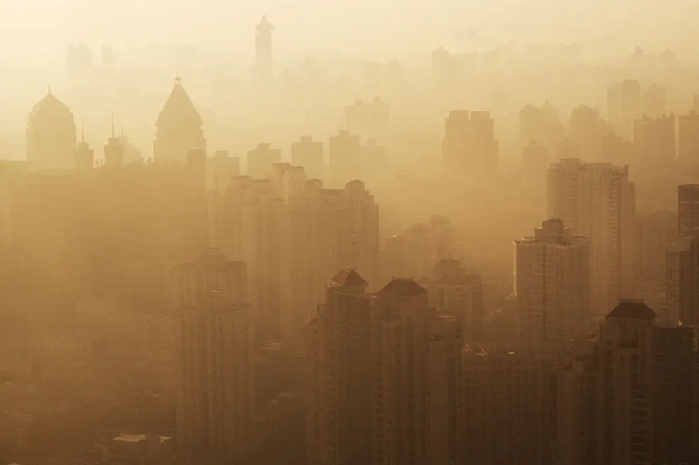

What is Air Pollution?
Air pollution occurs when harmful substances, including particulates and gases, are introduced into the atmosphere.
Why Air Pollution Matters
Air pollution has serious health effects, contributing to respiratory diseases, heart conditions, and premature deaths.
- Causes respiratory issues
- Contributes to climate change
- Increases healthcare costs
- Reduces life expectancy
How Air Pollution is Measured
Air quality is measured using various pollutants such as PM2.5, PM10, and NO2. Below is a table showing pollutant levels and safe limits:
| Pollutant | Concentration (µg/m³) | Safe Limit (µg/m³) |
|---|---|---|
| PM2.5 | 35 | 25 |
| PM10 | 50 | 40 |
| NO2 | 60 | 40 |
For more information on air quality, visit the UK Government Air Pollution Page.